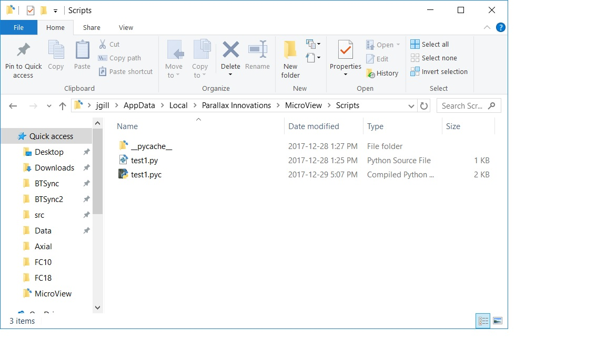

Scripting
Introduction
MicroView supports two extension mechanisms for running third-party code: plugins and scripts. While MicroView's plugin architecture is more powerful, and gives fine-grain control over the application, it has a steeper learning curve. For simple tasks, MicroView's scripting interface is sufficient.
Directories and Files
On application startup, MicroView looks for scripts by searching for python *.py files under the Scripts folder in it's application settings folder. The application settings folder can be found by selecting Help → Open User directory from MicroView's menu. The actual folder location will vary depending on your platform.
In the figure, below, the script folder is show for a Windows 10 computer. test1.py will be examined on application startup to see if it is a valid script.

Anatomy of a MicroView Script File
The contents of test1.py are shown below:
import logging logger = logging.getLogger(__name__) def zero_image(image, origin, spacing, dicom_info): """ replace image values with zero """ image[:] = 0 def flip_image(image, origin, spacing, dicom_info): """ flip image in x-axis """ image[:] = image[:, ::-1] logger.info("flipped image in x axis") def print_dicom_header(image, origin, spacing, dicom_info): """ print image dicom header """ logger.info("DICOM info: {}".format(str(dicom_info))) zero_image.__menu__ = 'Fill image with zeros' flip_image.__menu__ = 'Flip image in x-axis' print_dicom_header.__menu__ = 'Show image DICOM header' print_dicom_header.__requires__ = ['BeautifulSoup']
This script file contains three entry-point functions: zero_img(), flip_image() and print_dicom_header() all with the same argument list (image, origin, spacing, dicom_info). In order for MicroView to call a script function, it must have this calling syntax.
Arguments
- image: contains the currently-selected image as a numpy array.
- origin: the (x,y,z) origin of the image, measured in mm
- spacing: the image voxel spacing (x,y,z), measured in mm
-
dicom_info: a pydicom compatible dictionary representing the image meta-info in DICOM format. If the original image data was DICOM this will be a verbatim copy, otherwise a DICOM header is interpolated for the image
Note: The image array is a shared copy of the current image in MicroView: modifications to the image array modify the image in MicroView directly.
Meta-info
At the bottom of test1.py are four static lines that may seem a little odd. The first three attach a static attribute named __menu__ to each function. MicroView searches for this attribute before deciding if a function should be displayed from the Scripts menu. The final line provides a python list of required packages in order for the given function to be run. For instance, in test1.py above, print_dicom_header() is a simple script that prints DICOM header values to MicroView's central logging window - but it claims to require additional python software (BeautifulSoup in this case) before the plugin can be run. This last attribute provides a rudimentary way for MicroView to bootstrap additional software dependencies using python's pip installer.